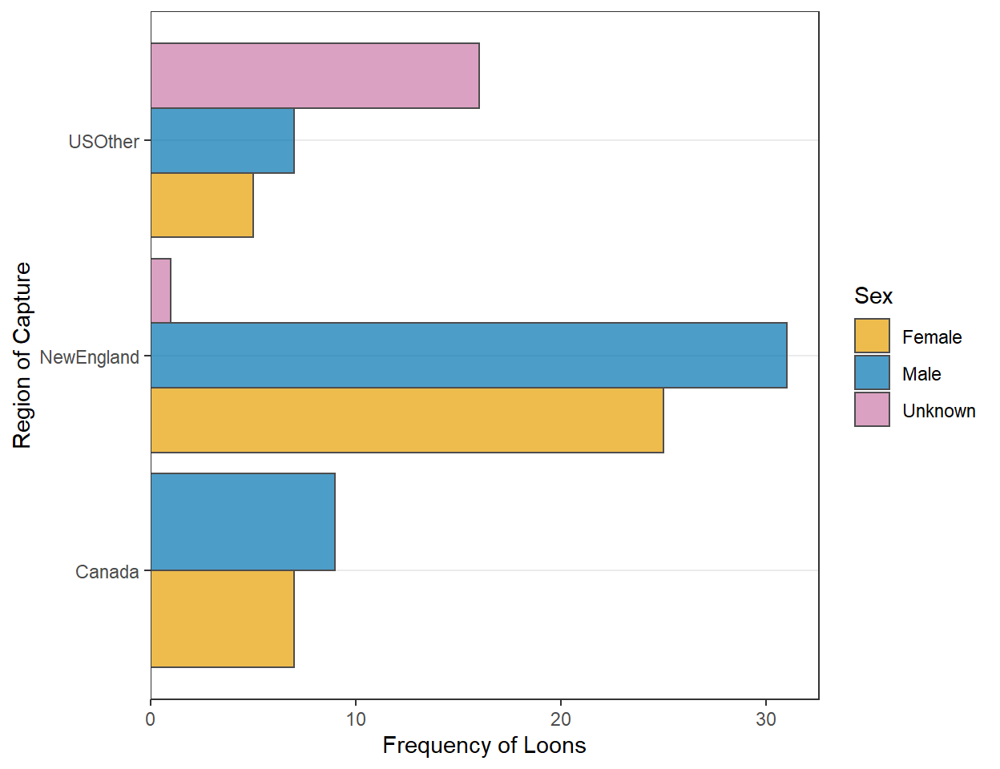

Background
 This is the same data set introduced here (which included code for accessing the data). If you did those exercises, then you can use the same data and package (e.g.,
This is the same data set introduced here (which included code for accessing the data). If you did those exercises, then you can use the same data and package (e.g., tidyverse) loading portion of your script.
This is the same data set introduced here (which included code for accessing the data). If you did those exercises, then you can use the same data and package (e.g., tidyverse) loading portion of your script.
Construct ggplot2 code to match the graph below (as closely as you can).
Construct ggplot2 code to match the graph below (as closely as you can … you don’t have to match my colors, but do use other than the default colors).
Construct ggplot2 code to match the graph below (as closely as you can).

Recreate the plot in the “Region 1” section but using summarized data (i.e., summarize the data first and then use that to construct the plot).
Recreate the plot in “Region and Sex 2” using summarized data. [Hint: you will be asked to use percentages in the next section, so you should prepare your summaries here for that.]
Construct ggplot2 code to match the graph below (as closely as you can).